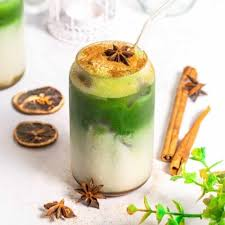

Matcha Latte

Description
Matcha latte is a creamy, vibrant green drink made from Japanese matcha
tea powder. It’s earthy, smooth, and naturally energizing. perfect for
mornings or study sessions.
Ingredients
- 1 teaspoon matcha powder
- 2 ounces hot water (not boiling)
- 8 ounces milk (dairy or plant-based)
- 1-2 teaspoons sweetener (honey, sugar, or syrup), optional
Instructions
-
Whisk matcha powder with a small amount of hot water until smooth.
- Heat the milk until warm and frothy.
- Pour the milk into the matcha mixture.
- Add sweetener to taste.
- Serve hot or iced.
Home